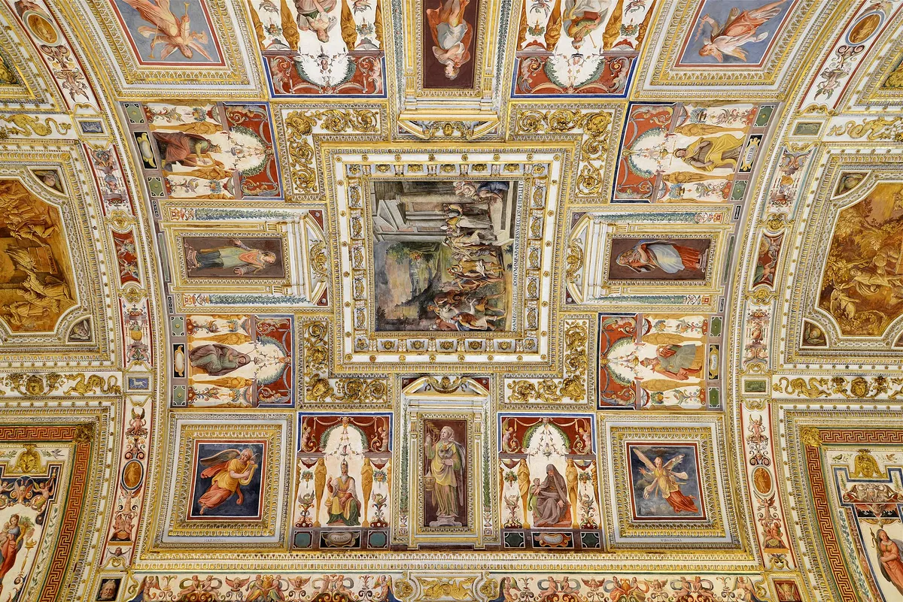
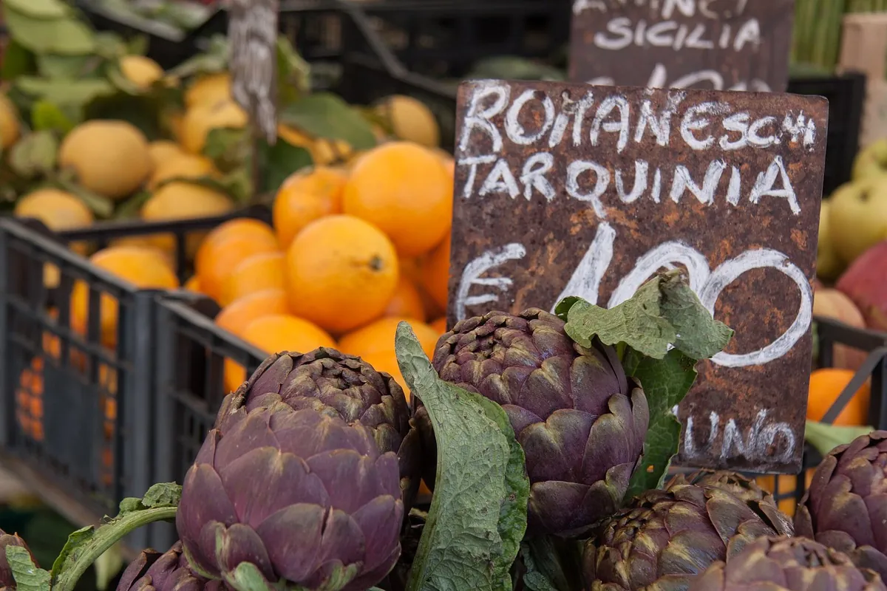
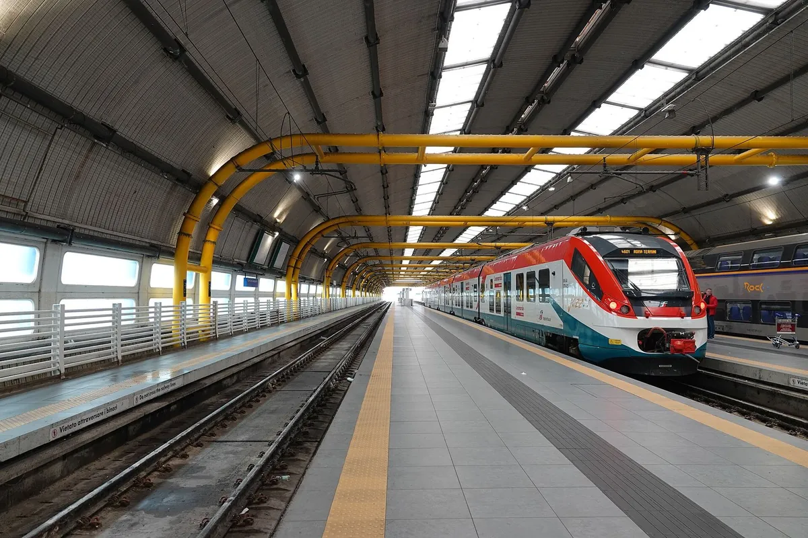
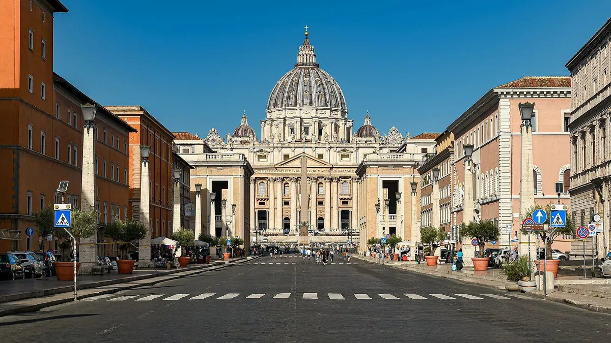

Roma, da vicino
Guide pratiche, cose da vedere, sapori ed eventi della città, scritte da chi vive tra Prati e il Vaticano.

San Pietro e la cupola: come organizzare la visita
Ingresso gratuito, 551 gradini fino in cima e una piazza che cambia a ogni ora del giorno. Come vedere San Pietro senza stress partendo da Prati.

Musei Vaticani e Cappella Sistina: guida pratica alla visita
L'ingresso è su Viale Vaticano, a pochi minuti dai nostri appartamenti. Cosa vedere, quando andare e perché conviene prenotare solo sul sito ufficiale.

Castel Sant'Angelo e il Passetto di Borgo: storia e visita
Un mausoleo diventato fortezza, un corridoio sopraelevato usato dai papi in fuga e una terrazza con vista su San Pietro. A 15 minuti a piedi da Via Ottaviano.

Prati da vivere: Via Cola di Rienzo, Piazza Cavour e il Tevere
Strade larghe e alberate, negozi, un mercato coperto del 1928 e un lungotevere che la sera diventa la passeggiata dei romani: il quartiere intorno a Via Ottaviano.

Dal Vaticano a Fontana di Trevi a piedi: Navona e Pantheon
Circa tre chilometri e mezzo, quasi tutti in piano, dal portone di casa alla Fontana di Trevi. Le tappe, i tempi e il modo più rapido per rientrare la sera.

Gianicolo e Trastevere: la passeggiata che parte da San Pietro
La terrazza panoramica più amata dai romani è a mezz'ora a piedi dal colonnato. Salita, cannone di mezzogiorno, discesa verso Trastevere e ritorno lungo il fiume.

Angelus della domenica e udienza del mercoledì: come vedere il Papa
Due appuntamenti fissi ogni settimana in Piazza San Pietro, entrambi gratuiti. Per l'Angelus basta arrivare, per l'udienza serve un biglietto: ecco come si ottiene.

Natale a San Pietro: presepe, albero e celebrazioni in piazza
Da inizio dicembre al Battesimo del Signore la piazza cambia volto: il grande presepe, l'abete illuminato, la mostra sotto il colonnato e le celebrazioni del Papa.

29 giugno, Santi Pietro e Paolo: infiorata, messa e Girandola
La festa dei patroni di Roma si svolge quasi tutta a pochi passi dai nostri appartamenti: fiori su Via della Conciliazione al mattino, fuochi su Castel Sant'Angelo la sera.

Natale di Roma, 21 aprile: come si festeggia il compleanno della città
Ogni 21 aprile Roma compie gli anni. Corteo in costume, rievocazioni al Circo Massimo e un raggio di sole che entra nel Pantheon come ai tempi di Adriano.

Cucina romana: i piatti da provare e come riconoscerli
Quattro paste, un fritto da mangiare con le mani e un dolce con la panna. La cucina romana si impara in pochi giorni, se sai cosa cercare nel piatto.

Mercato Trionfale: fare la spesa come un romano vicino al Vaticano
Oltre 270 banchi sotto un unico tetto, a pochi minuti dai Musei Vaticani. Il mercato dove fa la spesa il quartiere, e dove si capisce cosa mangia davvero Roma.

Roma in primavera e in autunno: perché sono le stagioni migliori
Temperature giuste per camminare, luce lunga e calda, feste che si ripetono ogni anno. Pro e contro dei mesi di mezzo, e come sceglierli.

Roma in estate: caldo, nasoni e orari furbi per visitare il Vaticano
Luglio e agosto a Roma sono caldi, ma con gli orari giusti la città si gode. Acqua gratis dai nasoni, visite all'alba, pause lunghe e serate sul Tevere.

Roma d'inverno e a Natale: clima, feste e musei senza code
Inverni miti, giornate corte e una città che a dicembre si accende di presepi e luci. Poi gennaio e febbraio, i mesi in cui i Musei Vaticani respirano.

Da Fiumicino e Ciampino al Vaticano: treno, bus o taxi
Leonardo Express più metro A, bus e navette, oppure taxi a tariffa fissa. Le opzioni per arrivare dagli aeroporti di Roma ai nostri appartamenti, con pro e contro.

Muoversi a Roma dal Vaticano: metro A, bus e biglietti
Tre appartamenti, tre fermate della metro A. Come funzionano BIT, pagamento contactless e pass turistici, quali bus servono davvero e quando conviene andare a piedi.

Tassa di soggiorno a Roma per appartamenti: quanto si paga e come
A Roma il contributo di soggiorno si paga a persona e a notte, fino a un massimo di notti. Importi per gli appartamenti, esenzioni ed esempi pratici di calcolo.

Borgo e Prati: la storia dei quartieri intorno al Vaticano
Da un lato del muro la città dei papi e dei pellegrini, dall'altro il quartiere costruito dopo il 1870 per la nuova Italia. Storia e toponomastica intorno ai nostri appartamenti.

Gite fuori porta da Roma: Ostia Antica, Tivoli e Castelli Romani
Una città romana intera, due ville patrimonio UNESCO e i paesi sui laghi dei Colli Albani. Tre gite facili partendo dalla metro A vicino a casa.